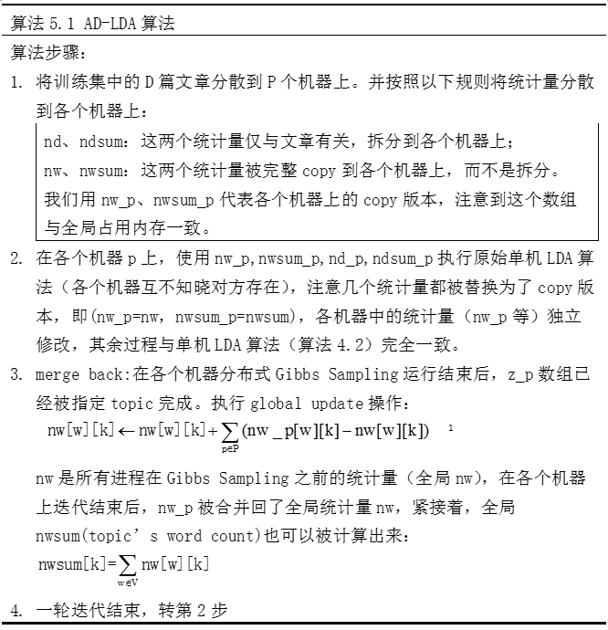
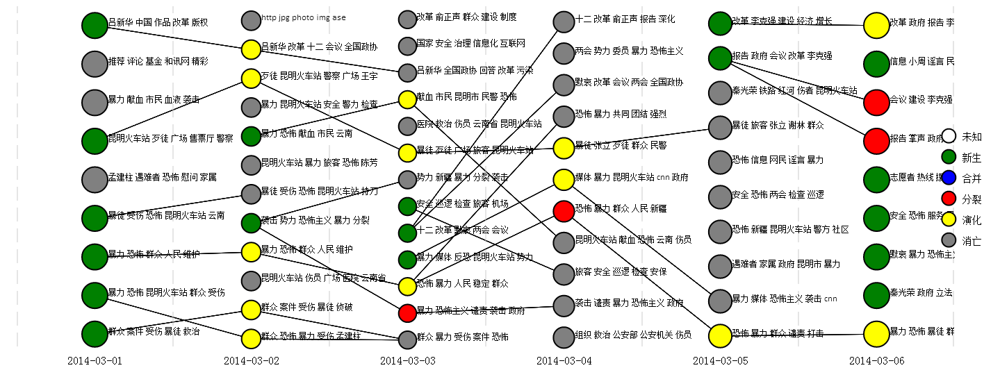

Topic Model-LDA实战篇
上一篇介绍了LDA的理论推导，这一篇进入LDA的实战，大致介绍下我用LDA做过的一些事情，欢迎大家一起探讨~
开源代码
我阅读修改过三个版本的LDA开源代码，按时间先后分别是GibbsLDA++/online_twitter_lda/ompi-lda。修改后的代码请移步到我的github https://github.com/nanjunxiao/LDA
1. GibbsLDA++
GibbsLDA++是单线程版LDA，由C++编写，代码很干净整洁，很适合入门学习。主要输出以下几个文件：
1). tassign文件（一行一个doc，冒号前是wordid,冒号后是topicid）
2). theta文件（doc->topic矩阵：行号=doc idx，列号=topic idx，值为文档属于该主题的概率）
3). phi文件（topic->word矩阵：行号=topic idx，列号=word idx，值为词在主题上的概率分布）
我修改了GibbsLDA++两个bug:
1). 内存泄漏。new的数组释放需要delete[]，而不是delete，这个问题比较多。
2). 数组访问越界。(double)random() / RAND_MAX产生值范围是[0,1]，int topic = (int)(((double)random() / RAND_MAX) * K); 会有生产K值的可能，这时就越界了。同理double u = ((double)random() / RAND_MAX) * p[K - 1]; u会有等于p[K-1]的可能，这时轮盘赌也越界了。修改办法就是将RAND_MAX改为RAND_MAX+1。
2. ompi-lda
ompi-lda是多机多线程版LDA，由C++编写，由王益大神编写。用到了mpi和OpenMP进行多机和多核实现。
我修复了infer.cc编写错误等不能编译问题，并且去除了lda.cc中’sampler.UpdateModel(corpus)’，我发现这个没有必要清空模型，采样需要不断累积。
我增加了theta和twords文件的输出，并且将依赖的boost库hpp/cpp文件打包到了include文件夹，这样不需要系统安装boost库，可以直接make。这个后面可以用标准C++重写cmd_flag，这样就不需要对boost的依赖了。
3. online_twitter_lda
online_twitter_lda是多线程版LDA，由python编写，可以按时间来增量计算。我也对其增加了theta和phi文件的输出。
参数设置
主题数K，我的经验一般取sqrt(#docs)/3，可以调研下HDP它不需要提前指定K。当然也可以用kmeans给定步长试探几次，选取sum(类内距离)/sum(类间距离)最小的K。
Dirichlet超参数α/β，经验值α=50.0/K，β=0.1
迭代次数iter_num一般>500次，当然越大效果越好。
并行实现
Gibbs Sampling LDA的并行化，存在着一个主要难题，就是nw、nwsum、nd、ndsum这几个统计量的同步更新问题，如果简单地将文章集拆分成若干份并行计算，A进程和B进程同时启动时，由于每次重新指定主题后，都会修改掉统计量（-1 重新分配topic +1），因此就会造成修改读写冲突，破坏统计量的一致性。
为了解决这个问题，David Newman等人提出了AD-LDA算法，该方法将文章切分到不同的机器上（按行拆分），该算法由于可以被转换成map-reduce操作，因此早期的LDA并行化实现都采用AD-LDA，该算法的核心是提出了global update操作，整个步骤如下所示

这个算法被看作单机版本的Gibbs Sampling的近似，因为在各个机器上不同进程启动Gibbs Sampling时，nw_p和nwsum_p互不知晓其他机器的存在而进行采样，就会造成前面提到的修改冲突，破坏统计量一致性，所以说这一步其实已经产生了误差，不能完全等同于单机版的Gibbs sampling，但其后的global update在每一轮迭代后都将这个问题尽可能地修复了。
并行LDA还有其他一些优化实现方法，比如腾讯的peacock系统，老师木的lightLDA等，what a shame，我还没有深入了解。
我的应用
1. 文本聚类
对话题语料进行细粒度子话题聚类，并基于不同时间片子话题间关联关系构建话题的演化历程，是子话题发现与演化的一种思路。
算法基本思想是时间片t的子话题通过与其前向时间片t-1和后向时间片t+1的子话题计算相似度，如果相似度超过阈值，两个时间片子话题间就构建一条边关联，可以将子话题演变状态归结为新生、发展、分裂、合并、消亡5种。
子话题状态确定伪代码如下：
1 | 1). 初始化：t时间片所有子话题的prior和post、fromset、toset都为空，状态为未知。 |
大致效果图如下

2. 文档打标签
利用LDA的历史训练结果，做新文章自动打Tag服务同样可以得到不错的结果，该方法通过infer得到文档的theta分布，找到该文档概率最大主题编号，然后根据phi分布获取主题编号的topN词，作为文章标签输出。
该方法对新闻文本效果较好，对于微博这种短文本严重依赖分词好坏。
代码可参考我的Github https://github.com/nanjunxiao/tag_doc_with_lda
3. 文本分类
Kaggle的“Bag of Words Meets Bags of Popcorn”比赛中，我尝试使用LDA的主题分布作为特征进行情感分类，使用linear SVM AUC大概0.93左右。在加入BOW和NGram后，linear SVM可以提高到0.95998。
参考资料
马晨. LDA算法漫游指南